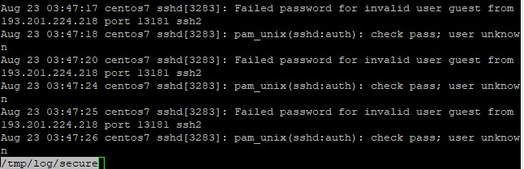
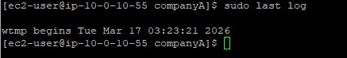

Event Auditing
Examined log outputs containing IP addresses, ports, and action states for failed authentication attempts.
Gain visibility into system authentication events and historical login data by parsing critical Linux security logs.
Connected via PuTTY (as described in Lab 225). Navigated the filesystem to read mock authentication incidents located in a dummy secure log file utilizing the less pager. Executed lastlog to verify all user accounts and their most recent recorded session dates.
Examined log outputs containing IP addresses, ports, and action states for failed authentication attempts.
Generated reporting demonstrating the exact time and origin of the most recent interactive logins for all accounts.
Detailed record of each task performed during the lab.
cd companyA.sudo less /tmp/log/secure.q to exit the less interface.sudo lastlog.root,
bin, and daemon, validating that most system accounts display
"**Never logged in**" indicating proper security isolation.

/tmp/log/secure for safety, actual
enterprise environments store their primary SSH/authentication journals inside /var/log/secure (RHEL models) or /var/log/auth.log (Debian models).
Commands utilized for log inspection.
lessA terminal pager program that displays text files one screen at a time.
q : Key binding utilized to quit the active paging sessionlastlogFormats and prints the contents of the last login database (/var/log/lastlog file).
less pager command.secure.lastlog.
Log monitoring acts as the bedrock of threat detection. By continuously auditing secure logs,
intrinsically vulnerable applications surface rapidly allowing firewall rules (like blocking hostile IP addresses)
to be implemented.
Coupling real-time behavioral logs with static tracking mechanisms like lastlog ensures
both active attacks and dormant compromised accounts are identified.